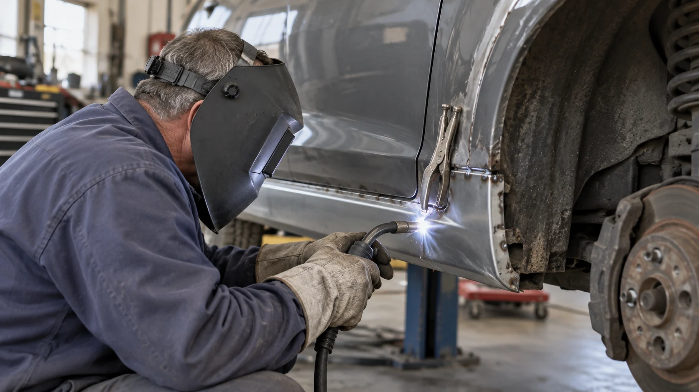

01Кузовная сварка
Пороги, арки и днище. Замена повреждённых участков и обработка соединений.
- Ремонт и замена порогов
- Арки, пол и участки днища
- Ремонтные вставки и обработка швов
Что важно учесть +
Осмотр показывает, достаточно ли локальной вставки или нужно менять участок целиком. Состояние усилителей и скрытых зон может потребовать дополнительной разборки. Методы ремонта выбирают с учётом конструкции автомобиля.